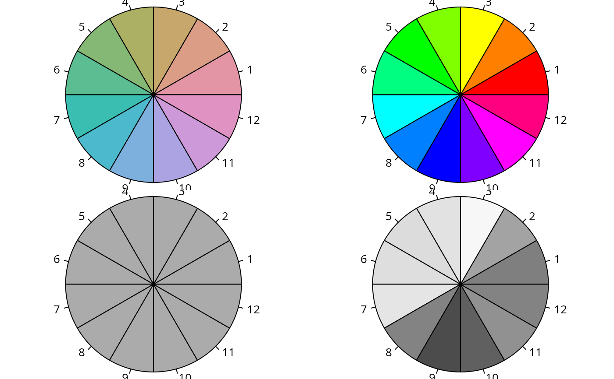

desaturate.RdTransform a vector of given colors to the corresponding colors with chroma reduced (by a tunable amount) in HCL space.
desaturate(col, amount = 1, ...)vector of R colors. Can be any of the three kinds of R colors, i.e.,
either a color name (an element of colors), a hexadecimal string
of the form "#rrggbb" or "#rrggbbaa" (see
rgb), or an integer i meaning
palette()[i]. Input col can also be a matrix with three
rows containing R/G/B (0-255) values, see details.
numeric specifying the amount of desaturation where 1
corresponds to complete desaturation, 0 to no desaturation, and
values in between to partial desaturation.
additional arguments. If severity is specified it will
overrule the input argument amount (for convenience).
A character vector with (s)RGB codings of the colors in the palette
if input col is a vector. If input col is a matrix with R/G/B
values a matrix of the same form and size will be returned.
If input col is a vector given colors are first transformed to RGB
(either using hex2RGB or
col2rgb) and then to HCL
(polarLUV). In HCL, chroma is reduced
and then the color is transformed back to a hexadecimal
string.
If input col is a matrix with three rows named R, G, and
B (top down) they are interpreted as Red-Green-Blue values within the
range [0-255]. The desaturation takes place in the HCL space as well.
Instead of an (s)RGB color vector a matrix of the same size as the input
col with desaturated Red-Green-Blue values will be returned.
This can be handy to avoid too many conversions.
Zeileis A, Fisher JC, Hornik K, Ihaka R, McWhite CD, Murrell P, Stauffer R, Wilke CO (2020). “colorspace: A Toolbox for Manipulating and Assessing Colors and Palettes.” Journal of Statistical Software, 96(1), 1--49. doi:10.18637/jss.v096.i01
## rainbow of colors and their desaturated counterparts
rainbow_hcl(12)
#> [1] "#E495A5" "#DB9D85" "#C7A76C" "#ABB065" "#86B875" "#5CBD92" "#39BEB1"
#> [8] "#4CB9CC" "#7DB0DD" "#ACA4E2" "#CD99D8" "#E093C3"
desaturate(rainbow_hcl(12))
#> [1] "#ABABAB" "#ABABAB" "#ABABAB" "#ABABAB" "#ABABAB" "#ABABAB" "#ABABAB"
#> [8] "#ABABAB" "#ABABAB" "#ABABAB" "#ABABAB" "#ABABAB"
## convenience demo function
wheel <- function(col, radius = 1, ...)
pie(rep(1, length(col)), col = col, radius = radius, ...)
## compare base and colorspace palettes
## (in color and desaturated)
par(mar = rep(0, 4), mfrow = c(2, 2))
## rainbow color wheel
wheel(rainbow_hcl(12))
wheel(rainbow(12))
wheel(desaturate(rainbow_hcl(12)))
wheel(desaturate(rainbow(12)))

## apply desaturation directly on wide RGB matrix (with R/G/B channels in rows)
RGB <- diag(3) * 255
rownames(RGB) <- c("R", "G", "B")
desaturate(RGB)
#> [,1] [,2] [,3]
#> R 127.1223 219.9281 75.94690
#> G 127.1213 219.9264 75.94625
#> B 127.1266 219.9352 75.94962